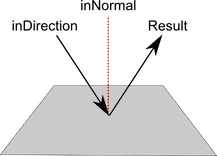

Vector3.Reflect
Description 描述
Reflects a vector off the plane defined by a normal.
The inNormal vector defines a plane (a plane's normal is the vector that is perpendicular to
its surface). the inDirection vector is treated as a directional arrow coming in to the plane.
The returned value is a vector of equal magnitude to inDirection but with its direction reflected.

Reflection of a vector off a plane.
using UnityEngine; using System.Collections;
public class ExampleClass : MonoBehaviour { public Transform originalObject; public Transform reflectedObject;
void Update() { // Makes the reflected object appear opposite of the original object, // mirrored along the z-axis of the world reflectedObject.position = Vector3.Reflect(originalObject.position, Vector3.right); } }